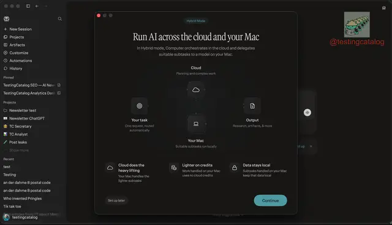

リーク情報 / その他
Perplexity、Mac向け「Hybrid Mode」を準備 ローカルAIとクラウドを自動分担

Perplexityが、Mac版「Perplexity Computer」にローカル推論を組み込む「Hybrid Mode」を準備していることが明らかになりました。クラウドの高性能モデルとMac上のローカルモデルを役割分担させ、推論コストの削減とプライバシー保護を両立する構想です。
QUICK READ
この記事の要点
クラウドとローカルをタスク単位で使い分け
Hybrid Modeでは、Computer全体のオーケストレーションはクラウド側で継続しつつ、適切なサブタスクをMac上で動くモデルへ自動的に委譲します。 複雑な推論はクラウドモデルが担当し、比較的軽い処理はローカルモデルが実行する設計です。ローカル処理されたタスクはComputerのクレジットを消費せず、対象データもMac内部に保持できます。 これは、すべてをローカル環境で実行するNVIDIA DGX Spark向け「Portable Computer」とは異なり、クラウドと端末を組み合わせたハイブリッド型のエージェント基盤となります。
16GB Macでも利用可能なモデルを準備
現在確認されているローカルモデル候補は3種類です。 Perplexity推奨モデル：約19GB、32GB以上のメモリを要求 Qwen 32B：約17.4GB、同様に32GB級のメモリを想定 Gemmaベースモデル：約5.6GB、16GBメモリのMacでも動作可能 Perplexity独自モデルとみられる推奨モデルの正式名称や詳細は、現時点では明らかになっていません。 ユーザーはComputerのモデル選択画面からHybrid Modeを有効化し、ローカルモデルが未導入の場合はセットアップできる仕組みになるとみられます。
「Privacy Gate」でクラウド送信前に機密情報を検査
注目されるもう一つの機能が「Privacy Gate」です。専用のローカルモデルが、クラウドへ送信される前のデータを検査し、個人情報や機密情報を検知します。 問題のある情報が含まれていた場合には、送信方法をユーザーへ確認する仕組みです。クラウドAI利用時に課題となるPII、つまり個人を特定可能な情報の外部送信を端末側で制御できるため、GDPRへの対応が重要な欧州企業などでも意味を持つ可能性があります。
Discord掲載記事からの抜粋です。詳細・文脈は全文と出典をご確認ください。
出典・参考リンク
日付はAFNJPへの掲載日です。発表元の公開日とは異なる場合があります。